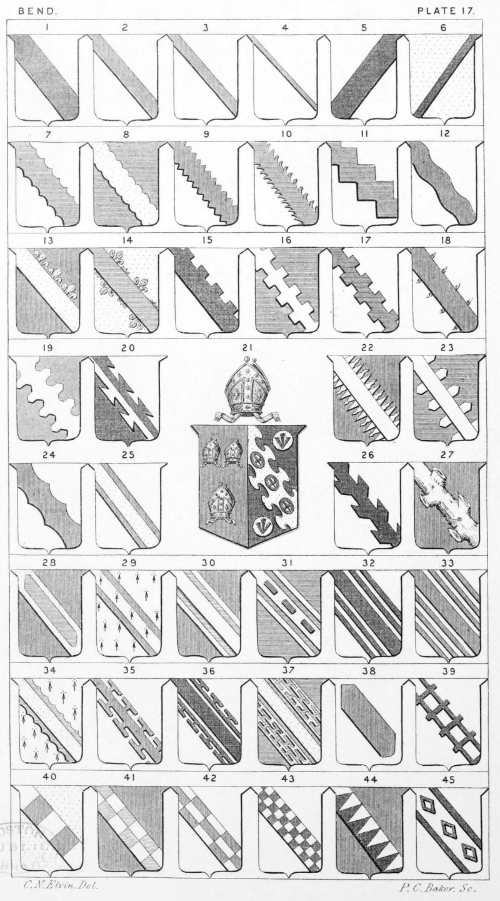

Plate 17.

Plate 17.
- Ar. a Bend sa.
- Ar. a Bendlet gu.
- Ar. a Garter gu.
- Ar. a Cost gu.
- Ar. a Bend-sinister sa.
- Or. a Scarpe sa.
- Bend Engrailed
- Bend Invected
- Bend Indented
- Bend Indented, embowed, or Hacked
and Hewed
- Bend Dancettee
- Bend Wavy
- Bend Flory
- Bend Flory counter-Flory
- Bend Embattled
- Bend Bretessed
- Bend Embattled counter-embattled
- Bend Flamant
- Bend Urdée, Urdy, Palisado, Champagne, or Warriated
- Bend Dovetail. Per Bend ar. and sa. a Bend Pattee or Dove-tail
counterchanged
- Arms of a Bishop. The arms of the
See of Chester gu. three mitres
labelled or ; Impaled with these
the Armorial Bearings of Dr.
Stubbs Bp. of Chester, viz. sa.
on a Bend Nebulee or, betw.
Two Bezants each charged with
a Pheon of the field, three oval
buckles tongues pendent of the
first
- Bend Radiant, Rayonne, or Radiant
rayonne
- Bend Urdée-Champained
- Bend Arondie, nuée, or nuage. Also
termed a Bend arondy treble-arched ; or gored on both sides
- Bend Edged
- Bend Raguly
- Bend of a limme (limb) of a Tree
Raguled and Trunked. Pen-
ruddocke
- Bend Bordered, or Fimbriated
- Bend Voided. Erm. a bend gu. voided
of the field
- Bend Double edged
- Bend Cottised. Az. on a Bend cottised
ar. three billets sa.
- Bend Double cotised, cottised, or
Cotticed
- Bend Treble cottised
- Bend Surmounted. Erm. a Bend Engrailed az. surmounted of another or.
- Bend Potentee
- Bend Cottised potentee
- Bend Double cottised potent counter-potent, also blazoned, Az. a
Bend. betw. four cottises potent
on the inner sides or.
- Bend Humette, or couped
- Bend Bretessed parted
- Bend Gobony or Compony
- Bend Compony counter-compony
- Bend Billettee counter-billettee
- Bend Chequy, or Checkie
- Bend Indented point in point
- In Bend. Ar. in bend three mascles
betw. two cottises sa.